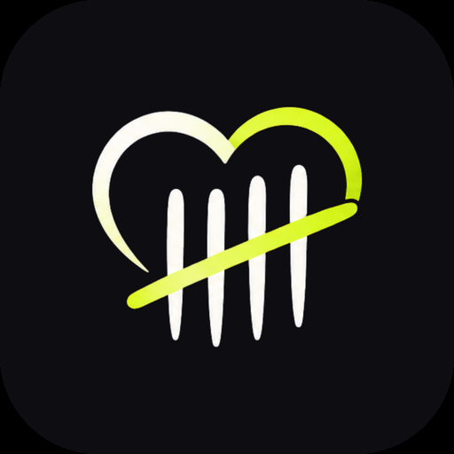
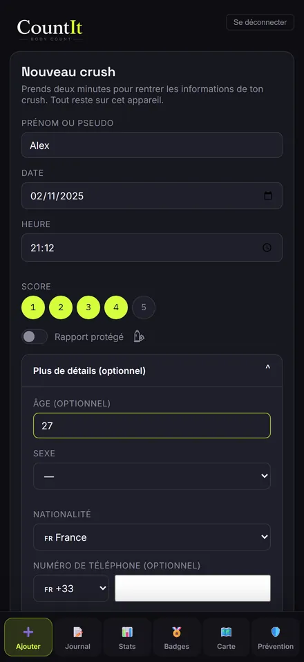
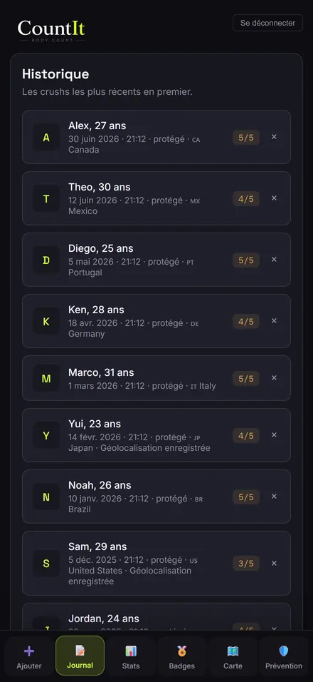
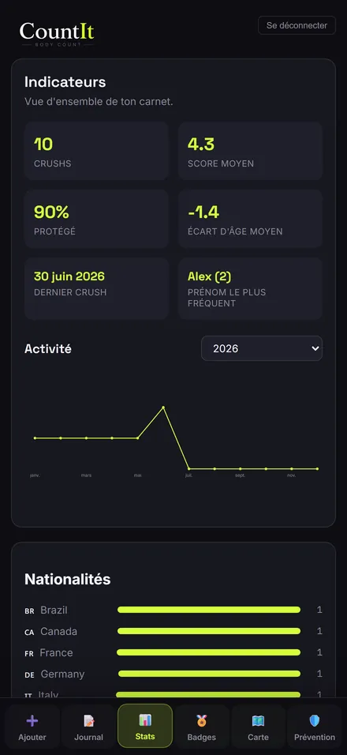
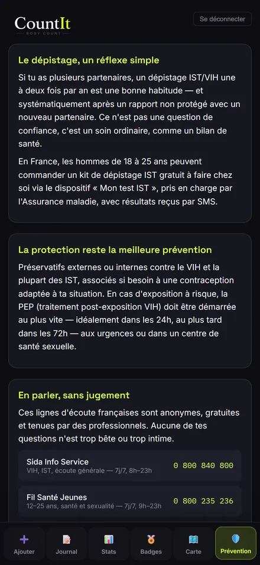

CountIt
Carnet intime & prévention
Le carnet privé et chiffré pour garder une trace de tes rencontres, sans jugement, sans cloud, avec la prévention intégrée.
Télécharger sur l'App StoreGoogle Play



Qu'est-ce que CountIt ?
CountIt n'est pas un réseau social : pas de profil, pas de fil, pas de swipe. Juste un carnet où noter chaque rencontre en quelques secondes, avec ton ressenti, la protection utilisée et une note libre.
Toutes les données restent sur ton téléphone, chiffrées avec une clé dérivée de ton mot de passe, et se déverrouillent avec Face ID ou l'empreinte digitale. Un onglet prévention rappelle les bons réflexes (dépistage IST/VIH, PEP) et des ressources fiables.
Fonctionnalités
- Données 100 % locales et chiffrées, sans cloud
- Déverrouillage Face ID / empreinte digitale
- Statistiques et graphique d'activité
- Badges qui récompensent la régularité et la prévention
- Onglet prévention IST/VIH avec ressources fiables
- Export, import et suppression complète en un geste
Questions fréquentes
Mes données sont-elles envoyées sur un serveur ?
Non. Tout est stocké et chiffré sur ton téléphone ; même le développeur n'y a pas accès.
CountIt est-il gratuit ?
Le carnet est gratuit ; les statistiques se débloquent par un achat unique à vie, sans abonnement.
À qui s'adresse CountIt ?
Aux personnes de 18 ans et plus. Ce n'est pas un service médical : en cas de doute, consulte un professionnel de santé.
Liens utiles : Support · Politique de confidentialité